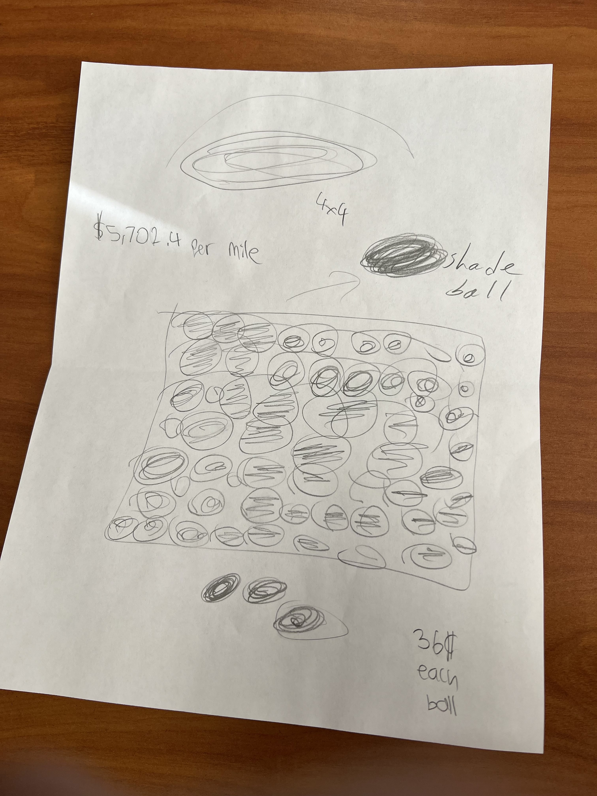
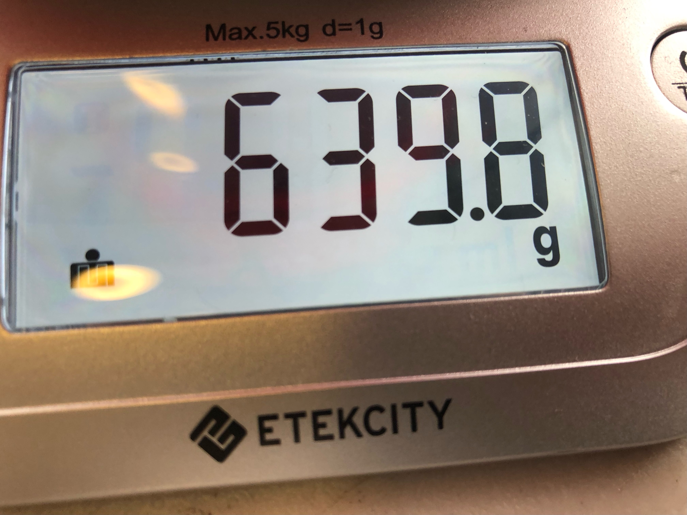
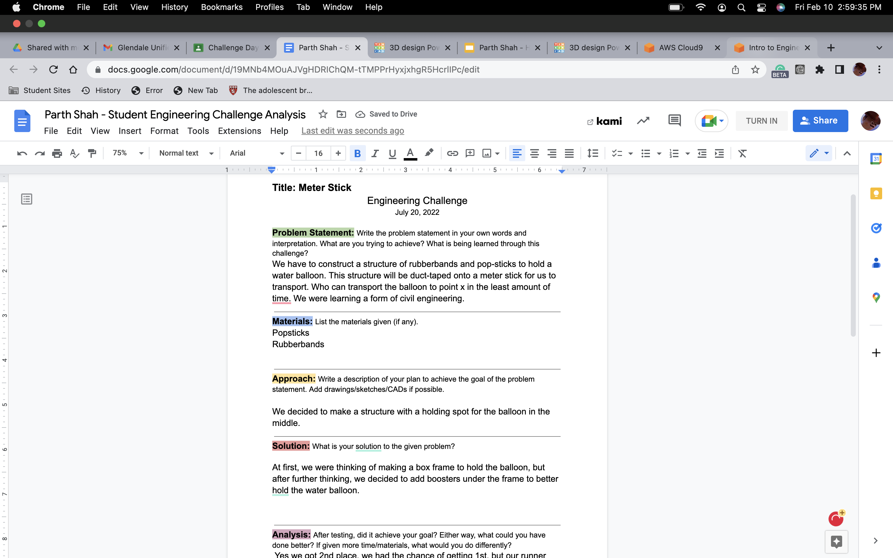

8/29/22-9/2/22 This week I learned about Tinkercad and how to build different objects from real life. We learned about mechanical engineering and the ssafety measures we had to take to cut metal, weld, and saw. In Tinkercad we were told to build home appliances.

9/5/22-9/9/22 This week we worked on our Rube Goldberg machines and my partners are Aiden, Danny, and Tigrin. We also had a challenge day where we made a 3D Model of and E, I wasn't there as I was helping my brother move in.
9/12/22-9/16/22 This week we mainly worked on our Rube Goldberg Machines on tinkercad. Our challenge day was floating the most amount of weight on a piece of paper. My team made a boat.

9/25/22 This week we finished our Rube Goldberg Machines Projects made out of cardboard. My teams machine popped the ballon on the first try. Our Challenge this week was to ghet a total number of all the urinals and toilets in the school... T_T


9/30/22 This week we had no challenge because Mr.Poole was sick ;( Our assignment was to make an animal prosthetic in Tinkercad and I made a leg prosthetic for a cow.
10/7/22 This week we dissected a computer, my partner was Alex and basically we both had already built our own pcs so seeing the parts such as the GPU, CPU, and other parts wasn't too suprising. However, we both learned about the different parts of a computer different from a PC.

10/14/22 This week we were put into teams, my teammates were Elias and Rafael we made a model rocket ship in Tinkercad made up of a 2L Coke bottle. Our challenge this week was to use a sheet of paper and get closest to a an area in the quad. Everybody made paper airplanes, while Mr.Poole made a crumpled ball. Think smarter nor harder.
10/21/22 This week we started physically building our rockets, me and Rafael built most of the building while Elias focused on glueing. Our Rocket consisted of 3 fins, a lot of tape, and a pointy tip. This was a great experience, by far one of the most fun projects.
10/28/22 This week we learned environmental engineering, and our project was to make a filter out of rocks, smaller rocks, sand, and dirt, all organized in a 2L bottle. My bottle's filter was not that great as we only filtered once, while other groups filtered 3 times.
11/4/22 This week we learned how to do circuits on tinkercad, we used a digital breadboard and practiced how to make LEDs light up. We also learned how to use resistors, which we have to precisely program to not blow up the LEDs.
11/11/22 This week we learned how to bread board with real bread boards, we did the same thing, but it was more complicated. Our challenge day was a question write to 1,000,000 or take a whole years math class, we chose the class.
.png)
11/18/22 This week we went more into depth into our electrical engineering unit, and we learned how to code on arduino to make cool led patterns. In the process we learned how to make the leds turn on and off by delaying, and also what specific code turns the code off and than after delay turns it on. Our challenge for this week was to solve the problem of sunlight making chemicals within a reservoir cancerous, me and my partner Rafael thought os a product called shade balls as they were low price and absorbed sunlight. Now we are on Thanksgiving break and I'm excited for the increase in free time I can use for my own priorities. Happy Thanksgiving :)
11/25/22 It was Thanksgiving Break. I got sick for the first half, causing me to have to do homework over the break. I went out to some friends house after I overcame the sickness. Over the break we did a Thanksgiving dinner at home with friends and fammily, we ate foods like pizza and what not.
12/02/22 This week we have moved onto civil engineering and our final correlates to civil engineering. We have to build a bridge out of uncooked spaghetti noodles, our limit is 20 sticks. Here is our current progress.
12/09/22 This week we worked on our bridges, thsi week our design was pretty scuff due to our design being broken multiple times. Our design ended up breaking due to there being some miscommunication with the sub. Luckily we were able to find the weak points of our bridge, and make a new one.
12/16/22 This week we made our testing and final bridge, in out first bridge we distributed our resources poorly, by managing our sticks over the entire area. Our final bridge critiqued this as we focused our resources on the connecting points and edges. Our testing bridge actually heald around 1.5 pounds, while our final bridge kinda broke due to some minor in-conveniences, *cough* *cough* The Legendary J. Poole.
Winter Break! These 2 weeks were amazing, I caught up on a lot of sleep, focused on building good habits like waking up early, excercising, and being productive. In the first week of winter break I let myself rest for the first few days, but the first week I was at home spending time with my family. I went on a cruise with some family friends during the second week for 8 days called the Royal Carribean: Symphony of The Seas. The first day we explored the ship we discovered an arcade room, water slides, pools, and different food places. The second day we were at sea so we basically explored all the food places and activities, there was one mexican restraunt which we ate at sometimes, which served nachos, burritos, and quesidillas. We also walked through the ships Central Park which was a walkway in the middle surrounded by nature and reastraunts at the border, felt like you were taking a stroll in a town. The third day we were at portat Cozumel, Mexico we didn't do much except tour the village that day, when we got back we had dinner at the main dining area windjammer the food was okay. The fourth day we were again at port on Roatan Island, this was a fun day as we got to tour the area and we went atving, I was with my brother and my friends were with their siblings. It was fun because my brother was slowing down in the back then slamming the pedal so we zoomed through the forest almost flipped on trees many times, but he's a great driver. That night was a formal night where we finally got to go to the third deck to the nice formal dining place, the food was exquisite and we got great photos. The fifth dday was in the bahamas this wasby far the best day, as we first went to their chocalate factory which was fun to see how they make their chocalate. Then we went to the wine factory where the older kids got to have a bit of fun with the dad. After that we toured one of their hotels, and got to go in the clear water beaches to swim. Then at night we got to go back to the formal dining area to eat some great food again, our server was a real nice guy. We finished the night off by playing cards. Day 6 we were at see again and it was a much needed break so we could explore the activities such as their Flowrider, 3 Water slides, Jacuzzis, and 1 other steel slide. Although that night I had an allergic reaction and threw up a ton due to wallnuts. The last day was a trip to Royal Carribean's island The Perfect Day At Cococay we played soccer pool, volleyball, swam, and ate tons of food.This break was by far the most memorable and I definitely can't sum up how great it was.
1/9/23 This week back to school we didn't do much, but we did have the assignment to pitch a product as if we were on shark tank. This was honestly a lot of fun doing just cause of the random things you can make up, also I really like business stuff.
1/17/23 This week we had Monday of for MLK Day. So this week we presented our previous slides, and watched others present theirs. It was a pretty chill week.
1/27/23 This week we learned about chemical engineering. One main thing we did was learn about viscocity, the consistency of a liquid. We did an oobleck experiment, which I wasn't here for as I was dropping a familie member to the airport. Although I came back to pink explosions all over the school, so I assume it was fun. Me and my partner Alex are making a Mouse trap car and we have been working on our proposal doc for building this car.
2/3/23 This week we worked on our Mousetrap car tinkerCad. We finished the cad during the week, currently we are thinking of doing a four wheeler woth a longer lever.
2/10/23 This week we further worked on our mousetrap car, we cut out the cardboard base(body) at the start of the week. Later we glued on strips on the border to act as the body for the axles to attach to. Towards the end of the week we made one pair of wheels and attached them to the axle, which we attached to the mousetrap car body. F0or our challenge day this week we had to make a structure out of popsticks and rubberbands to hold a water balloon. We attached this structure to a meter stick. The challenge was who could transport their water balloon the quickest to the end.
Challenge Day Link(if other link doesnt work): https://docs.google.com/document/d/19MNb4MOuAJVgHDRIChQM-tTMPPrHyxjxhgR5HcrlIPc/edit?usp=sharing
Challenge Day Document 2/17/23 This week we further built our mousetrap car and this week we actually finished it. We made the remaining 2 wheels, attached the mousetrap to the wheel axle: using fishing line, popsticks, and hotglue. Now we are focusing on how to make the mousetrap car travel further.
2/24/23 This week we worked on further building our mousetrap, so first we focused on enhancing our grip so that our acceleration wouldn't be wasted, so we put tape on our wheels. Later we realized this was a not helping our car, but rather making it more bumpier on the wheels. The next advancement we made was making our stick much longer, by doing this we added a few feet onto our distance as we had a longer span of acceleration. Our final advancement was making our car ligheter, we ended up cutting excess cardboard off the body to make it lighter, thois was a mistake as now our mousetrap car could not handle the tension of the mousetrap at its base. This caused it to fold, so we added popsticks to further support the base, and also make it as light as possible.
3/3/23 This week we finalized our mousetrap cars, we didn't do much to them other than test them, we did take a video:
3/10/23 This week we worked on a boat project and carrer slides, with the boat project we had to make a boat using 7 different supplies, with the carreer slides, we had to make slides talking about what carreer of engineering interests us and its details.
Boat Project: Challenge Day Carreer Slides Challenge Day Form3/24/23 Over spring break I went to a series of birthdays and sleep overs, I believe I spent it pretty well.This week we didn't do much as we had just got back spring break, we were introduced to our new project of the egg drop challenge. From Thursday to Sunday I went on a trip to UC San Diego with the Robotics Club for a competition, we saw their really nice campus with fast food and shops like target on campus.
Challenge Day Form